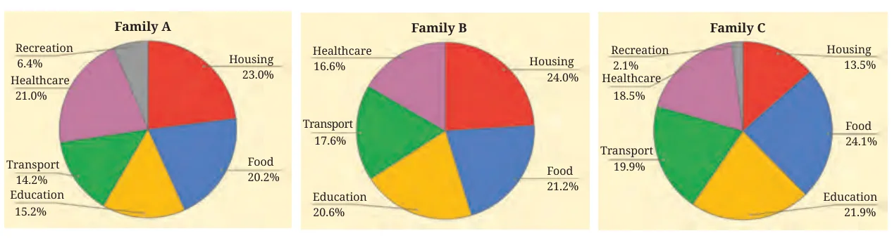
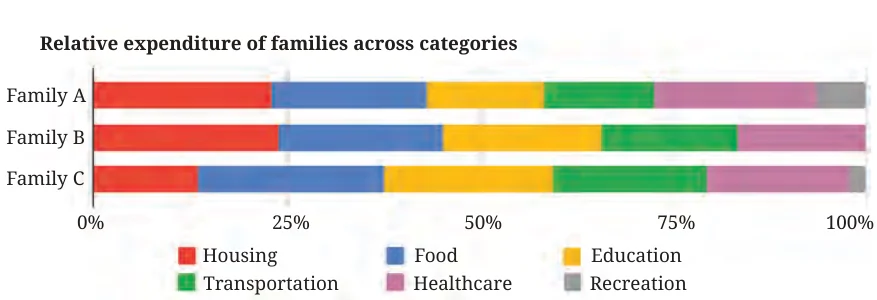
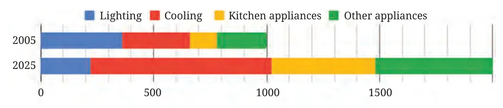
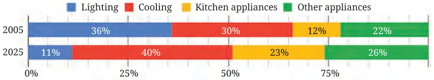
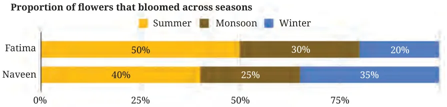
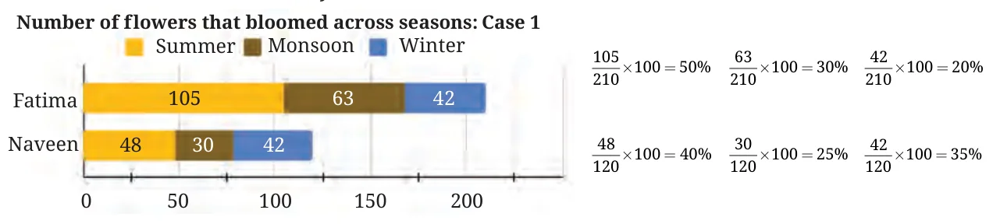
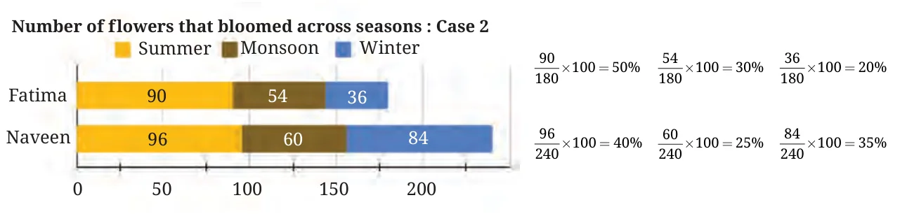
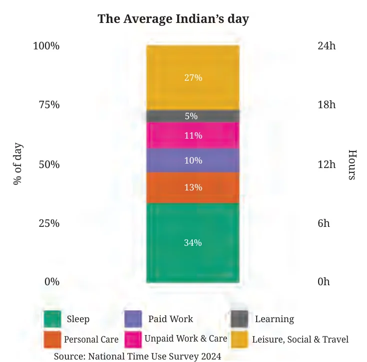
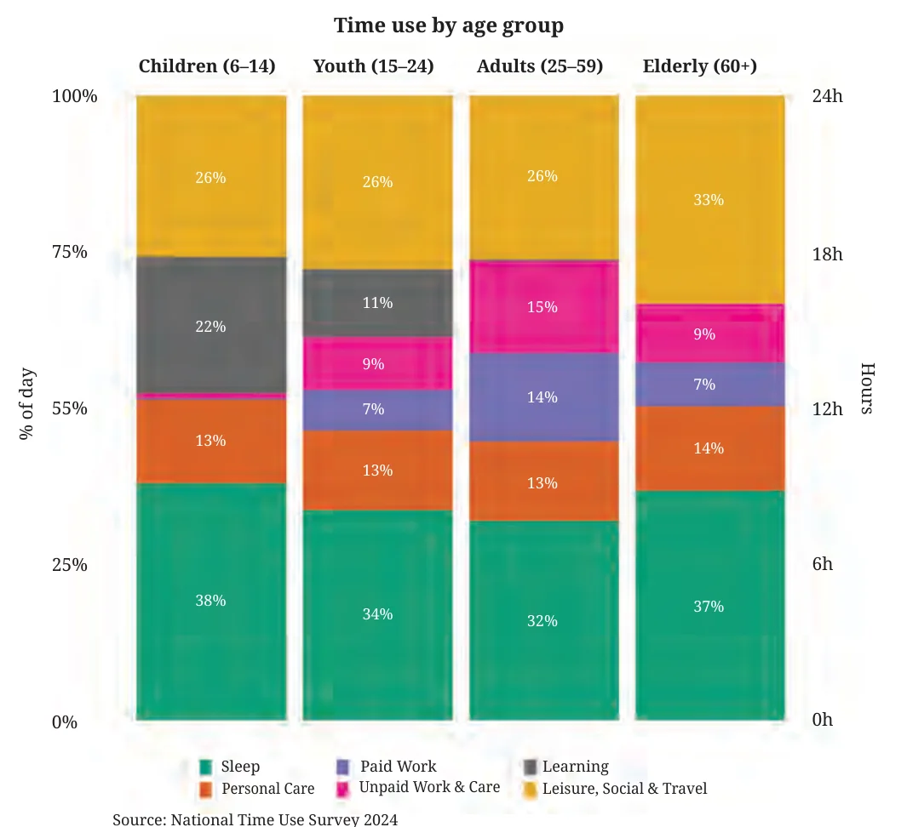
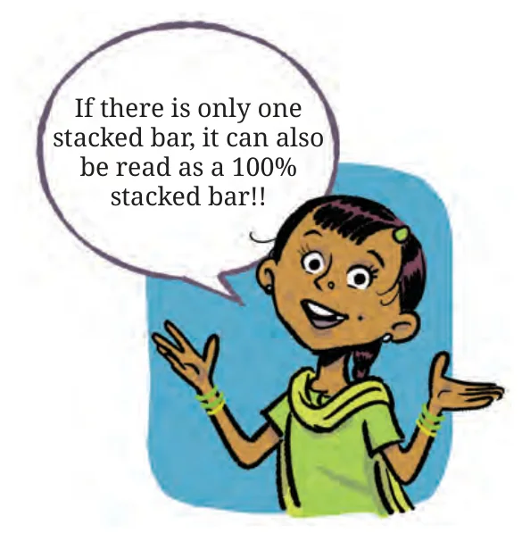

Try answering the following question based on the expenditure stacked bar chart you saw earlier:
Which family has the smallest share of their total expenditure towards healthcare?
Was it easy?
If not, what visualisation can help answer such questions easily?
Last year, we learnt how pie charts can capture proportions of quantities. Let us visualise this data through pie charts:

Now, consider the following visualisation showing proportions for the same data:

Here, the total expenditure of each of the three families is shown by a stacked bar of a fixed length. The lengths of the smaller bars in each stacked bar are proportional to the corresponding expenditures of that family. Such a chart is called a 100% stacked bar chart. It is similar to a pie chart — the complete angle in a pie chart is split proportionately based on the quantities, whereas here, a fixed length is split proportionately.
In pie charts, comparing angles in different orientations may be difficult. It may be easier to compare lengths across stacked bars. However, even in 100% stacked bar charts, if the lengths of a particular bar are similar across the stacked bars but the location is different, comparison may be difficult, as in the chart above.
Powering Up!
Example 7: The average category-wise daily electricity consumption of a house, in kWh, in 2005 and 2025 is shown in the table below. The corresponding stacked bar chart is also shown.
| Lighting | Cooling | Kitchen appliances | Other appliances | |
|---|---|---|---|---|
| 2005 | 360 | 300 | 120 | 220 |
| 2025 | 220 | 800 | 460 | 520 |

Make the corresponding 100% stacked bar chart.
In 2005, the total unit consumption was \(360 + 300 + 120 + 220 = 1000\) units.
The percentage share of lighting in this was \(\dfrac{360}{1000} \times 100 = 36\%\).
Similarly, the percentage share of cooling, kitchen appliances, and other appliances was 30%, 12%, and 22% respectively.
The calculation for the year 2025 can be done in the same way.

What do you observe? What do you find interesting in the data/graphs? Discuss with others.
What Can We Infer?
Example 8: The 100% stacked bar below compares the proportion of flowers blooming in Fatima’s garden and Naveen’s garden across seasons.

Which of the following statements can be inferred from this chart?
- In Fatima’s garden, there were more blooms in the summer than in the monsoon.
- In summer, Fatima’s garden had more blooms than Naveen’s garden.
- In winter, Fatima’s garden had fewer blooms than Naveen’s garden.
- The total number of flowers, across seasons, is the same in both gardens but it varies in each season.
(Hint: Find out the blooms per season in each garden if both the gardens had the same total number of blooms over the year. Similarly find out what happens if the totals are very different.)
What does the 100% stacked bar tell us?
In each garden, the total number of flowers for the whole year is shown as one bar and is taken as 100%. The colours show what fraction of that total bloomed in each season. So for Fatima’s garden, the bar tells us: 50% of her flowers bloomed in summer, 30% in monsoon, and 20% in winter. For Naveen’s garden, the bar tells us: 40% in summer, 35% in monsoon, and 25% in winter.
Statement (i): It compares seasons within the same garden (Fatima’s). So, within Fatima’s garden, the summer part is the largest fraction. This means she actually had more flowers in summer than in monsoon. So, (i) must be true.
Statements (ii) and (iii): These compare across gardens in the same season.
For example, in statement (ii), Fatima has a higher percentage in summer (50%) than Naveen (40%). But the chart does not tell us how many flowers they each had in total. Naveen’s total could be much larger. Then even 40% of Naveen’s total might still be more flowers than 50% of Fatima’s total. That means we cannot be sure who has more flowers in that season. Hence, (ii) and (iii) cannot be inferred from this graph.
Statement (iv): A 100% stacked bar chart always shows each bar as ‘100%’ of that garden’s total. It does not tell us whether the totals for the two gardens are equal or not. Many different total numbers can give the same 100% bar. Therefore, we also cannot say anything about the total over the whole year from this graph.
A 100% stacked bar chart helps us compare fractions/percentages inside each garden, but it does not tell us the actual numbers of flowers.
Two possible stacked bar charts are shown below for the 100% stacked bar chart we just saw.

\(\dfrac{105}{210} \times 100 = 50\%\quad \dfrac{63}{210} \times 100 = 30\%\quad \dfrac{42}{210} \times 100 = 20\%\)
\(\dfrac{48}{120} \times 100 = 40\%\quad \dfrac{30}{120} \times 100 = 25\%\quad \dfrac{42}{120} \times 100 = 35\%\)

\(\dfrac{90}{180} \times 100 = 50\%\quad \dfrac{54}{180} \times 100 = 30\%\quad \dfrac{36}{180} \times 100 = 20\%\)
\(\dfrac{96}{240} \times 100 = 40\%\quad \dfrac{60}{240} \times 100 = 25\%\quad \dfrac{84}{240} \times 100 = 35\%\)
Notice that the percentage of flowers that bloomed in summer is more in Fatima’s garden but this doesn’t say anything about the actual number — Fatima’s garden has more blooms than Naveen’s in summer in Case 1 but her garden has fewer blooms than his in Case 2. Also, in Case 1 both Fatima’s and Naveen’s garden had 42 blooms but the respective percentages are different.
Think and Reflect
- What does this say about the scope of the stacked bars and 100% stacked bars?
- Given a stacked bar chart can we make a corresponding 100% stacked bar chart?
- Given a 100% stacked bar chart can we make a corresponding stacked bar chart?
- What kind of inferences or comparisons can be made from a stacked bar chart and in a 100% stacked bar chart?
A Typical Day
Example 9: The following chart shows the time spent on different activities in a day by the average Indian. What do you notice? What do you wonder about?
You may point out that you don’t do much work and that your parents don’t spend any time learning. Note that this strip is representative of people across ages, genders, regions, social/family backgrounds, etc., across India.

When we visualise the same data by grouping ages, we get the following stacked column chart:

Think and Reflect
- What do you find interesting in the chart above? What can you infer? Discuss.
- Do you remember the sleep time over age trend that you studied last year? Does that trend align with this chart?
- Can you explain why the learning time of people in the age group 15 – 24 has reduced significantly compared to that of the age group 6 – 14?
- Do adults spend about an equal amount of time in paid and unpaid work? What do you think?
There might be a very small fraction of people whose day is similar/close to that of the average Indian. As we saw here, looking at only the average of a diverse collection often hides the differences and nuances within the data. We observed age-specific activity trends using this chart, which gave us a better idea. We could break these down further with respect to gender to examine any gender-specific trends within age groups.
You may wonder if there are differences across regions (e.g., rural and urban), or income, etc. You may be curious to look into the details — such as, what is included under personal care for different groups, or how does time spent on travel vary across cities and towns/villages? What we spend time on also depends on the times we live in. Clearly, a few decades ago, people didn’t have access to mobile phones or televisions. Only time will tell what such charts will look like after a few decades. We may also ask — how do people in other countries spend their time? How similar or different are the trends?
What type of chart is this — a stacked bar chart or a 100% stacked bar chart?
It is both! It is a stacked bar because each small bar represents the amount of time spent on a certain activity. It is also a 100% stacked bar as each stacked bar’s total is the same, i.e., 24 hours, and the lengths of the smaller bars within and across the stacks also represent the relative proportions of time spent.

Think and Reflect
Do you remember the ‘What Can A Strip Say?’ activity from last year? In each strip, if we club the tiny strips belonging to each activity together, will we get a 100% stacked bar chart like the one in Fig. 10.6?